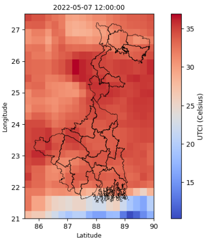
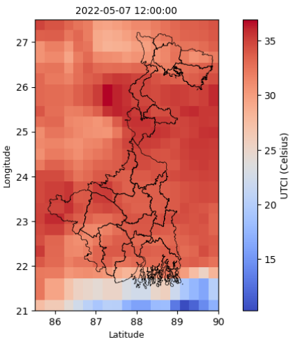

Diving Deep into West Bengal's Heatwaves: Our Approach Using ERA5-HEAT
Data
For the research on extreme heatwaves in West Bengal, we're leveraging
the power of the ERA5-HEAT dataset provided by the Copernicus Climate
Change Service (C3S).
What is ERA5-HEAT?
ERA5-HEAT is a highly reliable dataset derived from the ERA5
reanalysis, a comprehensive global dataset produced by the European
Centre for Medium-Range Weather Forecasts (ECMWF). It provides crucial
information like:
-
Mean Radiant Temperature (MRT): MRT represents the
average radiant heat that a human body would experience from its
surroundings. It's calculated by considering factors like air
temperature, solar radiation, and longwave radiation emitted by the
environment.
-
Universal Thermal Climate Index (UTCI): UTCI is a
more holistic index that integrates multiple environmental factors,
including air temperature, humidity, wind speed, and radiation. It
provides a more accurate assessment of the overall thermal stress
experienced by the human body compared to simple air temperature
measurements.
Data Selection
To focus on the critical pre-monsoon period and recent trends, we've
selected data from 2013 to 2024 for the months of
April, May, and June.
Furthermore, to ensure a localized analysis, we've narrowed down our
focus to a specific region within West Bengal. This allows for a more
in-depth understanding of the unique heat stress patterns within this
area.
Why This Data Matters
This dataset is invaluable for:
-
Understanding Heatwave Trends: Analyzing the frequency, intensity,
and duration of heatwaves in West Bengal.
-
Identifying Vulnerable Populations: Pinpointing areas and groups
most at risk from heat stress.
-
Assessing Climate Change Impacts: Evaluating how climate change is
likely to affect heatwave patterns and their impacts.
-
Developing Effective Mitigation Strategies: Supporting the
development of early warning systems and urban planning solutions to
mitigate heat stress.
Data visualization
By tracking the Universal Thermal Climate Index (UTCI) values over
time for the West Bengal region, we observe a gradual shift in the
intensity and distribution of heatwaves. Initially, the highest UTCI
values were concentrated in the central parts of West Bengal,
indicating extreme heat events. However, as time progresses, the
intensity of these heatwaves is shifting towards the southwestern part
of India, suggesting a potential change in regional heatwave patterns.
This shift highlights the importance of monitoring and understanding
local climate variations to predict and mitigate future extreme heat
events in the region.
Model Selection
Given that we are working with time series data, Recurrent Neural
Networks (RNNs) are a natural choice due to their inherent ability to
capture temporal dependencies. Among RNN architectures, Long
Short-Term Memory (LSTM) models are particularly well-suited for this
task. LSTMs excel at learning long-term dependencies in sequential
data, overcoming the vanishing gradient problem that can hinder
traditional RNNs.
Several promising model architectures have ben explored:
-
LSTM: This foundational model serves as a strong
baseline for time series forecasting. LSTMs effectively capture
long-term dependencies through their internal memory cells.
-
LSTM with Attention: Attention mechanisms enhance
LSTMs by allowing the model to focus on the most relevant parts of
the input sequence when making predictions, potentially improving
accuracy and interpretability.
-
Gated Recurrent Units (GRU): GRUs are a simplified
version of LSTMs with fewer parameters, making them potentially
faster to train and easier to optimize.
-
GRU with Attention: Combining the efficiency of
GRUs with the improved focus of attention mechanisms can offer a
balance between performance and computational cost.
Model Selection
Given that we are working with time series data, Recurrent Neural
Networks (RNNs) are a natural choice due to their inherent ability
to capture temporal dependencies. Among RNN architectures, Long
Short-Term Memory (LSTM) models are particularly well-suited for
this task. LSTMs excel at learning long-term dependencies in
sequential data, overcoming the vanishing gradient problem that can
hinder traditional RNNs.
Several promising model architectures can be explored:
-
LSTM: This foundational model serves as a strong
baseline for time series forecasting. LSTMs effectively capture
long-term dependencies through their internal memory cells.
-
LSTM with Attention: Attention mechanisms enhance
LSTMs by allowing the model to focus on the most relevant parts of
the input sequence when making predictions, potentially improving
accuracy and interpretability.
-
Gated Recurrent Units (GRU): GRUs are a
simplified version of LSTMs with fewer parameters, making them
potentially faster to train and easier to optimize.
-
GRU with Attention: Combining the efficiency of
GRUs with the improved focus of attention mechanisms can offer a
balance between performance and computational cost.
The choice of the best model ultimately depends on factors such as
data characteristics, computational resources, and the specific
requirements of the forecasting task. Importantly, the model
selection process should prioritize accuracy and consider relevant
loss metrics (e.g., Mean Squared Error, Mean Absolute Error) to
evaluate model performance effectively.
Model Performance Comparison
The LSTM+Attention model outperforms other models in predicting
heatwave patterns due to its unique ability to focus on the most
relevant features of the input data. While the LSTM component captures
long-term dependencies and temporal patterns effectively, the
attention mechanism further enhances its performance by dynamically
assigning weights to different time steps, allowing the model to
prioritize critical information. This combination helps in mitigating
the loss of important details over time, a limitation often observed
in plain LSTM or GRU models. As a result, the LSTM+Attention model
achieves higher accuracy and better generalization, making it more
adept at identifying subtle shifts and trends in the heatwave data,
especially for localized and seasonal variations in the West Bengal
region.


 
